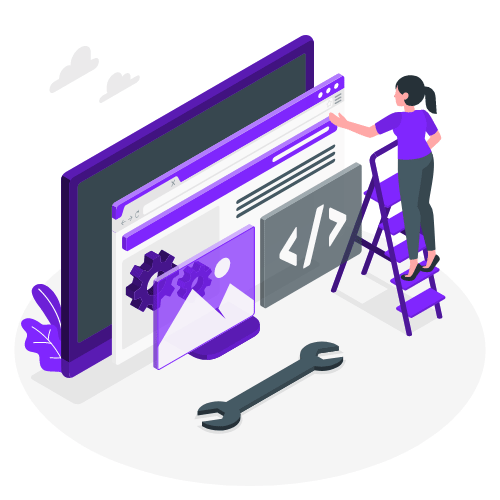

Sou um desenvolvedor full stack com mais de 5 anos de experiência em desenvolvimento web, trabalhando com TypeScript,PHP, React, React Native, Docker e PostgreSQL. Minha especialidade inclui a construção de aplicações escaláveis e performáticas, com integrações com APIs REST e SOAP, sempre focando em boas práticas e otimização de código.
Tenho experiência no desenvolvimento e manutenção de sistemas hospedados em AWS Cloud , utilizando serviços como EC2, S3, RDS e Lambda para garantir alta disponibilidade e eficiência.
✔️ Desenvolvimento front-end e back-end com span, React, React Native, Laravel e Node.js
✔️ Arquitetura de microsserviços e containers com Docker e Docker Compose
✔️ Bancos de dados relacionais e NoSQL, principalmente PostgreSQL
✔️ Integrações de APIs RESTful e SOAP para comunicação entre sistemas
✔️ Implantação, automação e escalabilidade na nuvem AWS
Com mais de 5 anos de experiência no desenvolvimento de aplicações mobile, sou especializado na criação de soluções robustas e escaláveis tanto para plataformas Android quanto iOS. Utilizo as tecnologias mais modernas e eficientes para garantir uma experiência de usuário fluida e intuitiva.
✔️ Desenvolvimento de apps nativos utilizando JavaScript e React, permitindo um desenvolvimento rápido e de alta qualidade.
✔️ Utilização do Expo para acelerar o desenvolvimento e testar apps diretamente no dispositivo, proporcionando uma integração simplificada com APIs nativas.

Com vasta experiência no desenvolvimento web, sou especializado em criar soluções robustas e escaláveis que atendem às necessidades do usuário e ao mesmo tempo proporcionam uma experiência fluida e intuitiva. Trabalho com as mais modernas tecnologias e frameworks , incluindo React, Reactjs, Laravel, e Node.js, além de integrar poderosas ferramentas como TailwindCSS, PostgreSQL, e Docker.
Além disso, busco sempre otimizar o processo de desenvolvimento, adotando boas práticas como testes automatizados, integração contínua e o uso de APIs RESTful para garantir que os sistemas sejam eficientes e fáceis de manter.
Com ampla experiência na arquitetura e implementação de microserviços, sou especializado em criar soluções escaláveis, flexíveis e de fácil manutenção para sistemas distribuídos. Ao adotar uma abordagem baseada em microserviços, consigo decompor aplicações complexas em serviços independentes, permitindo maior agilidade, escalabilidade e resiliência no desenvolvimento de sistemas de grande porte.
Utilizo tecnologias como Docker, Docker Compose, para criar e gerenciar microserviços de forma eficiente, com comunicação entre serviços por meio de APIs RESTful e event-driven architectures. A separação de responsabilidades e a independência de cada serviço garantem que as equipes possam trabalhar de maneira mais ágil e independente, acelerando o processo de desenvolvimento e a entrega de funcionalidades.
Com uma sólida experiência em desenvolvimento de software, aplico as melhores práticas de Metodologia Ágil para garantir entregas rápidas, eficientes e de alta qualidade. Utilizando frameworks como Scrum e Kanban, busco promover um ambiente colaborativo, onde a comunicação constante com o cliente e a adaptação contínua aos requisitos são essenciais para o sucesso do projeto
Acredito que a chave para um desenvolvimento ágil é a flexibilidade e a iteração rápida. Com ciclos curtos de desenvolvimento e revisões periódicas, conseguimos entregar incrementos de valor constantes, ajustando o produto de acordo com as necessidades reais do usuário e as mudanças do mercado. Além disso, a metodologia ágil facilita a priorização de tarefas, aumentando a produtividade da equipe e a satisfação do cliente.